相机不变，模型为什么突然有了立体感？
第五章完成了观察与投影；现在保持相机与几何不变，只加入光照计算。
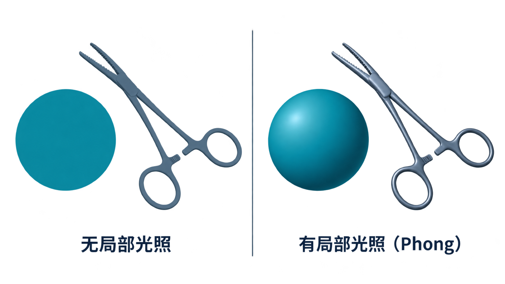
先预测：只改变光源位置，会改变什么？
固定模型、相机、投影方式与材质，把光源从左侧移到右侧。
几何与投影之后，为什么还需要光照？
光线到达表面以后发生什么？
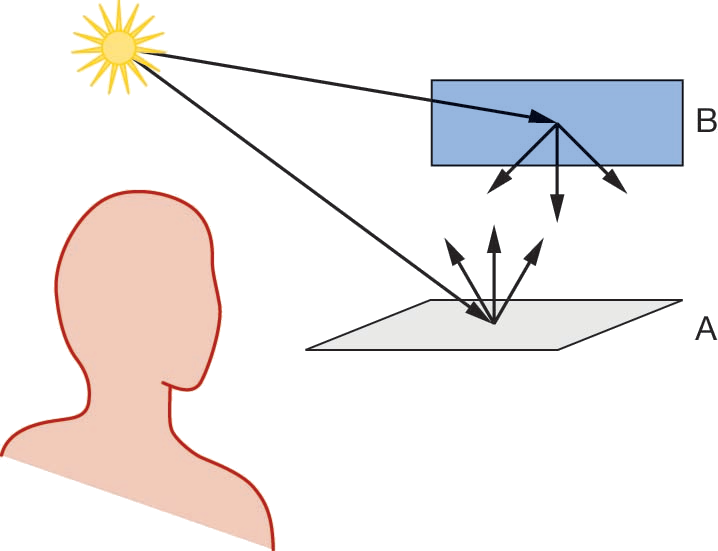
吸收
部分光能被材质吸收。
漫反射
光向多个方向散射。
镜面反射
能量集中在接近反射方向的区域。
局部光照：只计算当前点附近的关系
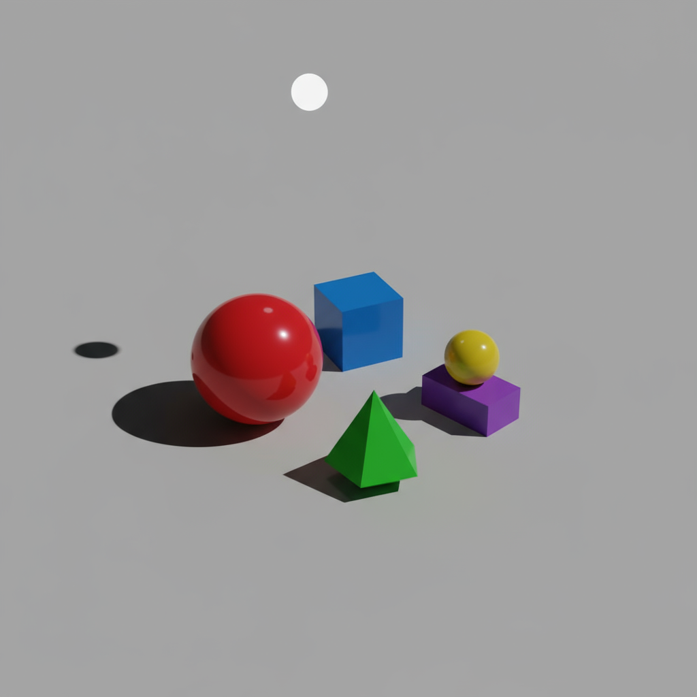
局部光照

全局光照
环境光：为什么暗面并非总是全黑？
用场景中近似均匀的照明项，模拟无法逐一追踪的环境贡献。
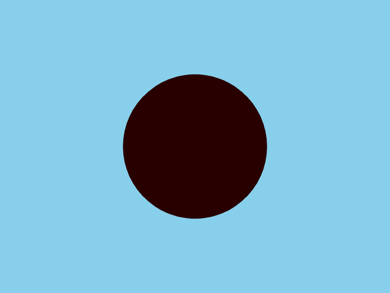
平行光：远处光源，方向近似相同
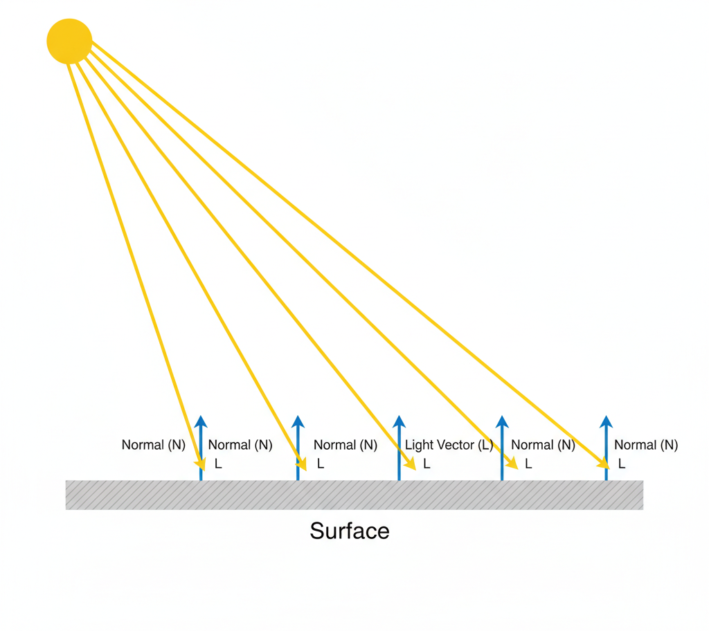
点光源：位置改变，照射方向随之变化
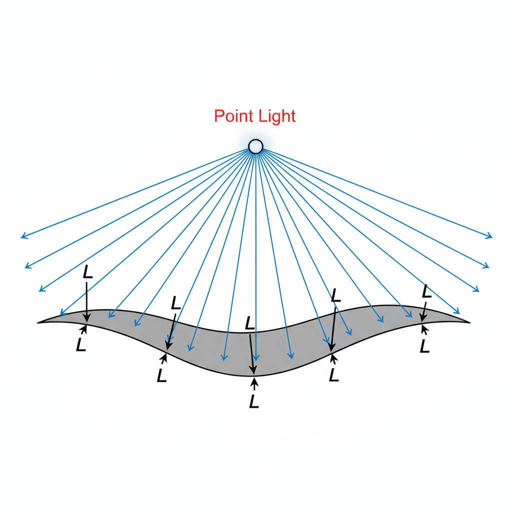
聚光灯：增加发光方向与锥角
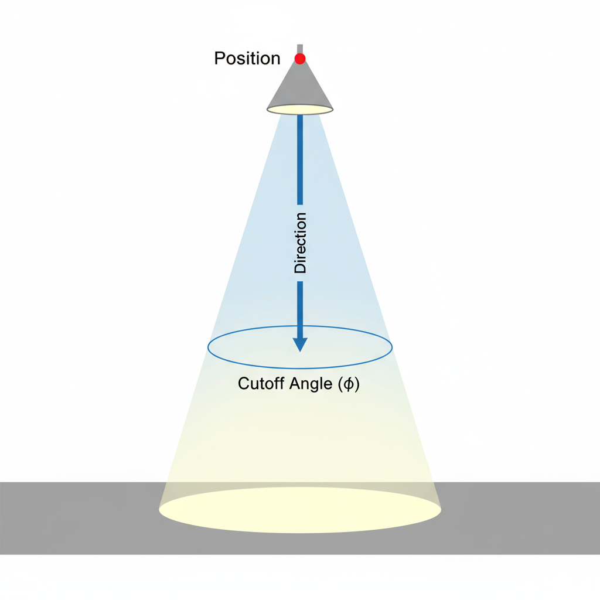
同样的灯光，不同表面为什么外观不同？
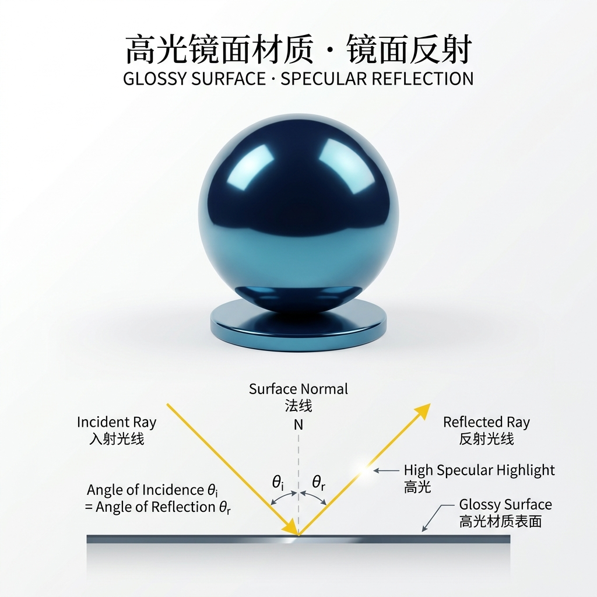
高光镜面表面：镜面反射（集中高光）
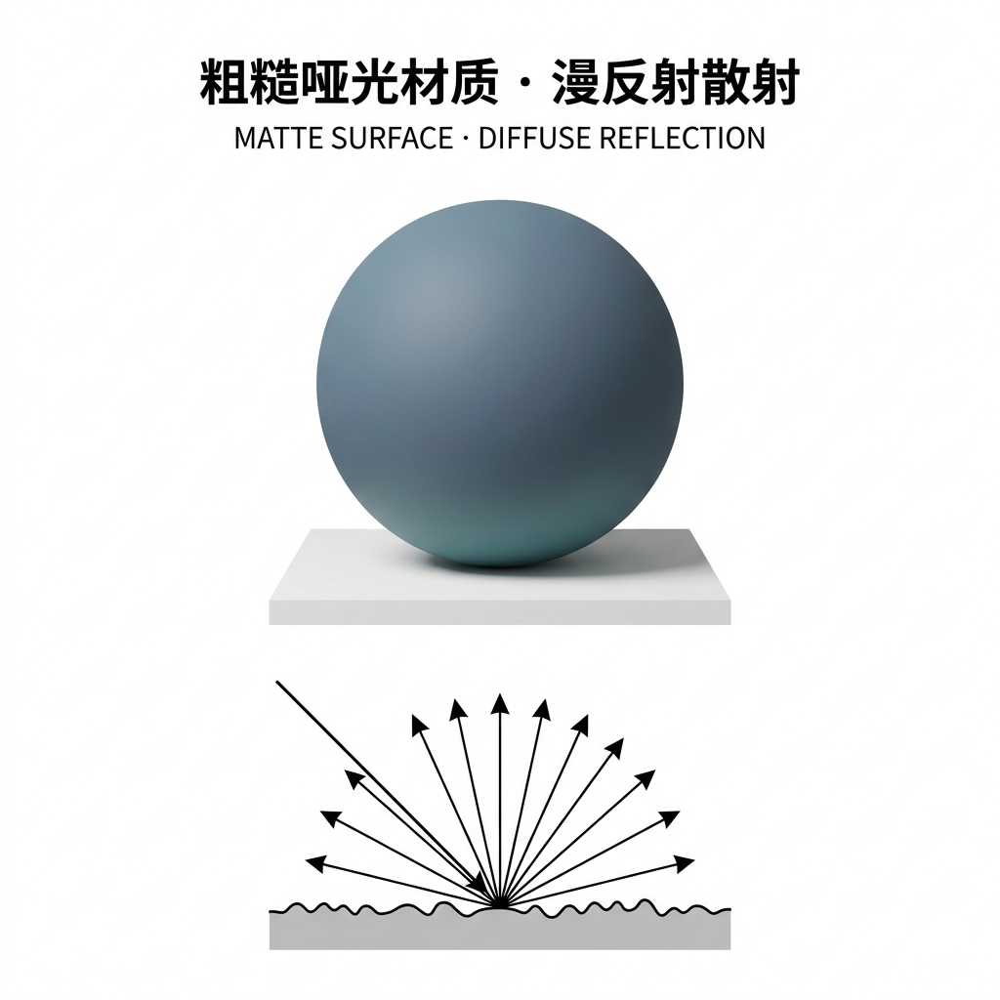
粗糙哑光表面：漫反射散射（柔和明暗）
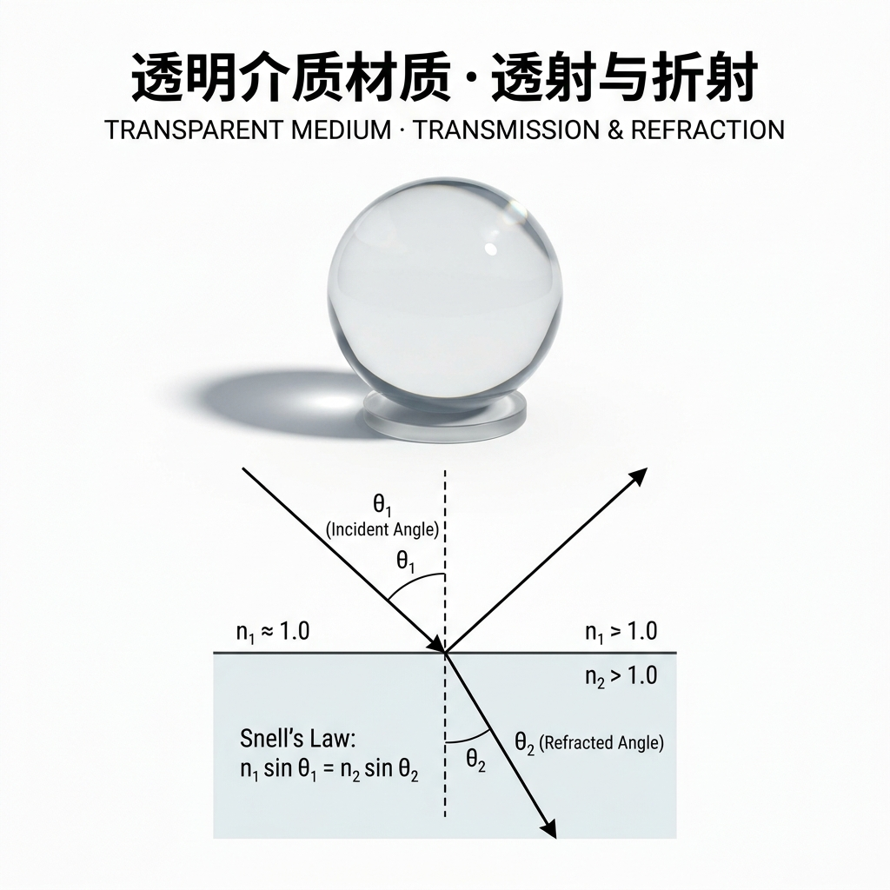
透明介质表面：透射与折射（内部通透）
要素一 · 光源：照亮场景的物理能量源
在局部光照计算中，光源由类型、几何向量与 RGB 辐射强度三要素共同定义：
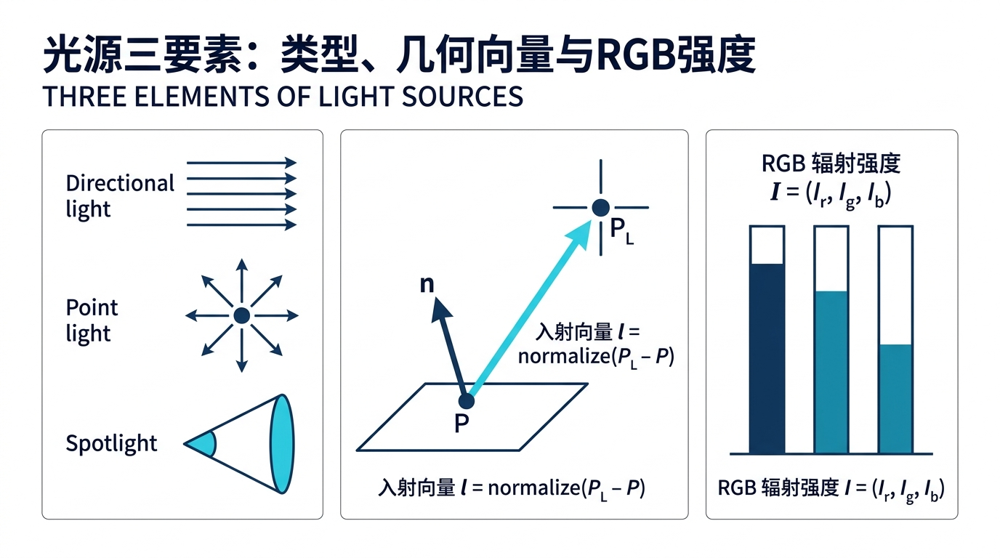
① 光源类型 (Type)
平行光 / 点光源 / 聚光灯
决定光线传播的几何分布与入射角范围。
② 入射向量 l (Vector)
\(\mathbf{l} = \text{normalize}(P_L - P)\)
由表面点指向光源位置，参与余弦点乘计算。
③ RGB 辐射强度 I (Color)
\(I = (I_r, I_g, I_b)\)
光谱能量向量，决定光源冷暖颜色与发光功率。
uniform vec3/vec4 形式传入着色器，是外部环境的物理输入。
要素二 · 材质：物体对光的吸收与反射响应
物体表面将入射光能量解构为三项反射分量，分别控制底色、立体感与高光：

① 环境反射 ka
基础明度 · 消除死黑
对无方向环境光的漫射反射，维持背阴处底色。
② 漫反射 kd (\(\mathbf{l}\cdot\mathbf{n}\))
固有色 · 朗伯立体感
各向同性散射，由法线与光线夹角塑造平滑明暗。
③ 镜面高光 ks (\(\mathbf{r}\cdot\mathbf{v}\))n
高光耀斑 · 光滑度 n
\(k_s\) 控亮度，指数 \(n\)
控光斑聚拢锐利度（金属感）。
要素三 · 观察者：视线决定高光落在哪里
漫反射散射向全空间各向同性，而镜面高光具有高度方向性，唯有视线对准才可见：

① 视线向量 v
\(\mathbf{v} = \text{normalize}(\text{Eye} - P)\)
由表面点指向相机视点，确定眼睛观察方向。
② 高光视点依赖性
\(I_{\text{spec}} \propto (\mathbf{r}\cdot\mathbf{v})^n =
\cos^n\alpha\)
\(\mathbf{v}\) 贴近反射方向 \(\mathbf{r}\) 见强高光；视点移动，高光位移。
③ 同一标架点乘
\(\mathbf{n}\)、\(\mathbf{l}\)、\(\mathbf{v}\) 空间统一
所有向量必须在世界或相机同一标架下完成点积运算。
D06-01 · 光源与材质参数显微镜
光源与材质参数显微镜
固定球体与器械模型及相机视角，独立调控光源与材质属性，实时观察光照分量与明暗高光响应。
带着问题观察与验证
- 分量单开验证：依次单开“仅环境光”、“仅漫反射”与“仅镜面反射”，观察不同分量对表面立体感与高光的独立贡献。
- 光源类型与位置切换：切换点光源与平行光并移动 X/Y/Z，观察明暗分界线与高光耀斑如何跟随移动。
- 高光指数对比：拖动高光指数 \(n\)（从小到大），观察高光斑点如何从大面积弥散变为集中锐利的光斑。
- 材质与光源颜色乘积：调节光源 RGB 与材质颜色，验证出射色彩为何是两者逐通道的乘积。
三轮操作：每次只改变一个因素
- 实验① 固定材质，移动光源：观察明暗区域。
- 实验② 固定光源，改变材质颜色：观察反射颜色。
- 实验③ 固定两者，移动视点：预测观察方向是否影响高光。
WebGL2需要向着色器传递什么信息？
#version 300 es
uniform vec3 uLightColor;
uniform vec3 uLightPosition;
uniform vec3 uMaterialDiffuse;局部光照中的五组核心信息
光源
颜色、位置或方向。
材质
各类反射系数。
表面
位置与法向量。
医学模型查看器：如何让结构更清晰？
一个骨骼或医疗器械三维模型在不同光照下会呈现不同的形体线索。